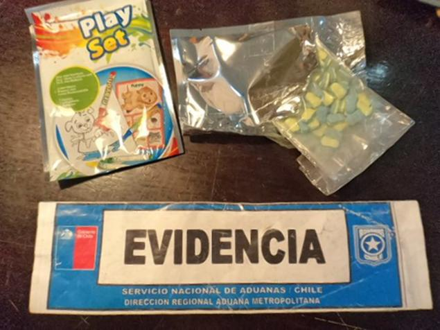

Новости
Благотворительный марафон миньонов

Количество миньонов на планете постоянно увеличивается.
Например, в одном только Токио за один день их численность возросла на 10 000.
Всему виной благотворительный марафон, который объединил японцев в едином порыве стать миньонами.
Дистанция забега составила всего 1 километр, поэтому желающих поучаствовать пришло очень много.
Даже не представляю, где они взяли столько костюмов миньонов, но выглядит…
Наркотик экстази миньоны

Какие еще нужны доказательства того, что в мире практически не осталось людей равнодушных к этим ярким персонажам из мультфильма «Гадкий Я»? Производители наркотиков тоже осознали всю популярность миньонов и чтобы подстегнуть продажи решили воспользоваться их добрым именем.
Чилийская таможенная служба задержала двух человек, граждан Чили и Аргентины.
На данный момент они помещены под домашний арест….
Стога сена миньоны
В США миньоны приобрели запредельную популярность, поэтому люди используют их везде, где только это возможно.
Американские фермеры одни из самых первых осознали, что делать миньонов из мусорных баков или покрышек уже не модно, а вот из сена, это уже что-то новенькое.
Насколько популярно это занятие, вы можете оценить исходя из количества фотографий, представленных ниже. Разумеется,…
Как сплести браслет миньон из резинок на станке, рогатке или вилке
Миньон из резинок В прошлом году российских детей и их родителей захватило повальное увлечение, которое называется лумигуруми.
По сути, это вязание фигурок крючком, только в качестве материала используются, набравшие огромную популярность, резиночки Rainbow Loom.
Большой толчок в развитии этого вида творчества дали наши с Вами любимые герои.
После премьеры мультфильма, одним из самых массовых изделий…
Миньоны песня и видео банана откуда они взялись?
Миньоны банана, именно это набирают в ютуб, когда хотят показать что-то веселое про этих забавных существ.
Среди многих роликов, видео отрывков и короткометражных мини мультфильмов песня миньонов банана выделяется своей небывалой приставучестью.
Стоит Вам ее где-нибудь услышать и потом в голове целый день будет раздаваться миньонское ба ба ба банана.
И можно сказать Вам повезло,…
© minions.com